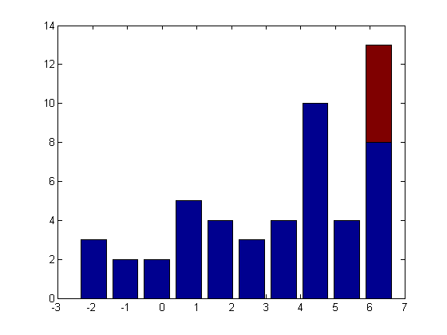

カスタム一変量分布の近似 (第 2 部)
このデモでは、Statistics Toolbox™ の関数 mle の高度な使用例を示し、カスタム分布を一変量データと近似します。以下の例では、モデルと打ち切りデータの近似や、カスタム分布の近似における数値の詳細について説明します。カスタム一変量分布の近似のデモでは、他の例についても取り上げます。
目次
カスタム分布と打ち切りデータの近似
機械部品の故障時間のモデル化にはしばしば、極値分布を使用します。このようなケースでの実験は一定時間しか実行しない場合があります。いずれかの実験単位がその時間内に失敗した場合、データは右側打ち切りとなります。つまり、故障時間の正確な値は把握できず、特定の値より大きいことしか把握できません。
Statistics Toolbox には、極値分布を、打ち切られたデータを含むデータと近似する関数 evfit があります。ただし、この例の目的上、関数 evfit は取り上げず、関数 mle とカスタム分布を使用し、極値分布を使ってモデルを打ち切りデータと近似する方法について説明します。
打ち切りデータの値は正確に把握できないため、最尤推定がより困難になります。特に、対数尤度を計算するには PDF および CDF の両方が必要です。したがって、打ち切りデータを近似するには、これら両方の形式のための関数と共に関数 mle を指定する必要があります。Statistics Toolbox には関数 evpdf と関数 evcdf が含まれています。したがって、この例については、コードの記述作業は既に完了しています。
それでは、モデルとシミュレーション データを近似します。最初の手順は、打ち切られていない極値データを生成することです。
rand('state',0); randn('state',0); n = 50; mu = 5; sigma = 2.5; x = evrnd(mu,sigma,n,1);
次に、事前設定されたカットオフ値よりも大きいすべての値を、カットオフ値に置き換えることによって、打ち切ります。これは、第 2 種の打ち切りとして知られています。カットオフ値が 7 の場合、オリジナルのデータの約 10% が打ち切られます。
c = (x > 7); x(c) = 7; sum(c)/length(c)
ans =
0.1000
これらのデータのヒストグラム、たとえば棒グラフをプロットして、打ち切られた観測値を表現できます。
[uncensCnts,binCtrs] = hist(x(~c));
censCnts = hist(x(c),binCtrs);
bar(binCtrs,[uncensCnts' censCnts'],'stacked');
 打ち切りが行われても、打ち切られた観測値の割合は比較的小さいものです。そのため、モーメント法がパラメーター推定のための合理的な始点となります。打ち切られていないデータの観測平均値および標準偏差に対応する mu と sigma の値を計算します。
sigma0 = sqrt(6)*std(x(~c))./pi mu0 = mean(x(~c))-psi(1).*sigma0
sigma0 =
2.0109
mu0 =
4.2485
PDF および CDF 関数に対するデータ、x、およびハンドルを、関数 mle に引き渡すだけでなく、'censoring' パラメーターを使用して打ち切られたベクトル c を引き渡します。スケール パラメーターである SIGMA は正の数でなければならないため、パラメーターの下限を指定します。関数 mle によって、2 つの極値分布パラメーターである mu と sigma の最尤推定の他に信頼区間 (約 95%) が返されます。
[paramEsts,paramCIs] = mle(x, 'censoring',c, 'pdf',@evpdf, 'cdf',@evcdf, ... 'start',[mu0 sigma0], 'lower',[-Inf,0])
paramEsts =
4.9001 2.4051
paramCIs =
4.1831 1.8270
5.6171 2.9831
カスタム分布の近似の数値問題
カスタム分布の近似には、パラメーターの初期推定が必要です。始点が前提としてどの程度優れているかを判断するのは困難です。前の例では、最尤推定とかけ離れた始点を選択していたら、観測値のいくつかは、その始点に対応する極値分布の裾部から大きくずれていたかもしれません。次の 2 つの事象のうち、いずれかが発生していた可能性があります。
まず、いずれか 1 つの PDF 値が小さくなりすぎ、倍精度演算で 0 に下位桁あふれしていた可能性があります。次に、いずれか 1 つの CDF 値が限りなく 1 に近づき、倍精度で端数が切り上げられた可能性があります (また、CDF 値が小さすぎて下位桁あふれが発生したが、結局問題にならなかった可能性もあります)。
これらの状況はいずれも、関数 mle が対数尤度を計算するときに問題の原因となることがあります。それは、これらの状況によって -Inf という対数尤度値が導き出され、通常は、mle の最適化アルゴリズムが、このような領域を回避することは期待できないからです。
最尤推定の概要を理解したうえで、別の始点ではどうなるかを見ていきましょう。
start = [1 1];try[paramEsts,paramCIs] = mle(x, 'censoring',c, 'pdf',@evpdf, 'cdf',@evcdf, ... 'start',start, 'lower',[-Inf,0]) catch ME disp(ME.message) end
The CDF function returned values greater than or equal to 1.
この場合、2 番目の問題が発生しました。初期パラメーター推定において CDF 値のいくつかはちょうど 1 と計算されました。したがって対数尤度は無限です。mle の FunValCheck 制御パラメーターを「オフ」に設定してみましょう。そうすると、有限でない尤度値のチェック機能が無効になり、最善の成果を期待することになります。しかし、この数値問題を解決する正しい方法はその根元にあります。この場合、問題の解決は困難ではありません。
極値 CDF の形式は次のとおりです。
p = 1 - exp( -exp((x-mu)./sigma) )
打ち切り観測値の対数尤度への寄与は、その生存関数 (SF) 値の対数、すなわち log(1-CDF) です。極値分布の場合、SF の対数は -exp((x-mu)./sigma) です。(log(1 - (1-exp(logSF))) を計算するのではなく、対数生存関数を直接使用して対数尤度を計算できる場合は、CDF での四捨五入の問題を回避することができます。それは、倍精度で 1 と見分けることができない CDF 値を持っている観測値は、非ゼロ値として容易に表現できる対数生存関数値を持っているためです。たとえば、CDF 値 (1 - 1e-20) は倍精度で 1 に丸められます。それは、倍精度 eps が約 2e-16 であるためです。
SFval = 1e-20; CDFval = 1 - SFval
CDFval =
1
ただし、対応する生存関数値の対数、つまり log(1-CDF) は容易に表現されます。
log(SFval)
ans = -46.0517
PDF そのものではなく、対数 PDF を使用する場合にも同様の観測ができます。対数尤度に対する、打ち切られていない観測値の寄与は、その PDF 値の対数です。log(exp(logPDF)) を計算するのではなく、対数 PDF を直接使用すると、倍精度で PDF 値を 0 (ゼロ) と見分けることのできない下位桁あふれ問題を回避できます。ただし、対数 PDF は有限の負数として容易に表現可能です。たとえば、倍精度 realmin は約 2e-308 であるため、PDF 値 (1e-400) は倍精度で下位桁あふれします。
logPDFval = -921; PDFval = exp(logPDFval)
PDFval =
0
mle には、'logpdf' および 'logsf' パラメーターを通じて、(PDF や CDF ではなく) 対数 PDF および対数 SF を使用してカスタム分布を指定するための構文があります。PDF および CDF 関数とは異なり、既存の関数はありません。したがって、これらの値を計算する無名関数を作成します。
evlogpdf = @(x,mu,sigma) ((x - mu) ./ sigma - exp((x - mu) ./ sigma)) - log(sigma); evlogsf = @(x,mu,sigma) -exp((x-mu)./sigma);
同じ始点を使用して、極値分布の代替対数 PDF/対数 SF を指定することで、問題が解決可能になります。
start = [1 1]; [paramEsts,paramCIs] = mle(x, 'censoring',c, 'logpdf',evlogpdf, 'logsf',evlogsf, ... 'start',start, 'lower',[-Inf,0])
paramEsts =
4.9001 2.4051
paramCIs =
4.1831 1.8270
5.6171 2.9831
ただし、この方法によって必ずしも始点の貧弱さが緩和するわけではありません。始点は必ず慎重に選択するようにしてください。
勾配の指定
既定の設定では、関数 mle は、関数 fminsearch を使用してデータの対数尤度を最大化するパラメーター値を検出します。fminsearch は、導関数を使用しない最適化アルゴリズムを使用しますが、これが良い選択肢となることもあります。
ただし、問題によっては、対数尤度関数の導関数を使用する最適化アルゴリズムを選択すると、特に始点が最終的な回答とかけ離れている場合、最尤推定値に収束するか、最尤推定値に収束しないかに大きな差が出てきます。導関数を指定すると、収束を促進することもできます。
インストールした MATLAB® に Optimization Toolbox™ が含まれている場合は、mle で関数 fmincon を使用できます。この関数は、導関数情報を使用できる最適化アルゴリズムを含んでいます。関数 fmincon でアルゴリズムを利用するには、対数尤度だけでなくその勾配を返すために記述されている対数尤度関数を使用して、カスタム分布を指定してください。対数尤度関数の勾配は、簡単にいうと、そのパラメーターに関連する部分導関数のベクトルです。
この手法では、対数尤度とその勾配の両方を計算するコードを記述するための追加準備が必要になります。この例については、別個のファイル evnegloglike.m に、極値分布について対数尤度と勾配の両方を計算するコードが作成されています。
type evnegloglike.m
function [nll,ngrad] = evnegloglike(params,x,cens,freq)
%EVNEGLOGLIKE Negative log-likelihood for the extreme value distribution.
% Copyright 1984-2004 The MathWorks, Inc.
% $Revision: 1.1.4.2.2.1 $ $Date: 2010/07/29 21:29:29 $
mu = params(1);
sigma = params(2);
nunc = sum(1-cens);
z = (x - mu) ./ sigma;
expz = exp(z);
nll = sum(expz) - sum(z(~cens)) + nunc.*log(sigma);
if nargout > 1
ngrad = [-sum(expz)./sigma + nunc./sigma, ...
-sum(z.*expz)./sigma + sum(z(~cens))./sigma + nunc./sigma];
end
関数 evnegloglike は、対数尤度値と勾配値の両方について負数を返します。それは、最尤推定 (MLE) によって、負の対数尤度が最小化するためです。
勾配に基づく最適化アルゴリズムを使用して最尤推定を計算するために、ここでは、負の対数尤度を計算する関数に対してハンドルを渡すように指定する 'nloglf' パラメーターを使用します。また、最適化関数として fmincon を指定する 'optimfun' パラメーターを使用します。関数 mle は、evnegloglike が負の対数尤度とその勾配の両方を返すことができるかどうかを自動的に検出します。
start = [1 1]; [paramEsts,paramCIs] = mle(x, 'censoring',c, 'nloglf',@evnegloglike, ... 'start',start, 'lower',[-Inf,0], 'optimfun','fmincon')
paramEsts =
4.9001 2.4051
paramCIs =
4.1831 1.8270
5.6171 2.9831